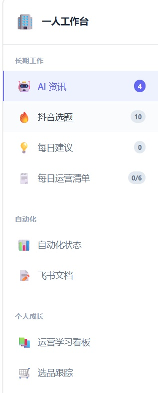

用 AI 工具从零搭建的个人工作系统，把信息获取、内容产出与文档管理串成一条自动化流水线，支撑电商运营学习与日常效率。
▶ 打开实时工作台
聚合中文 AI 资讯、精选与日报，第一时间掌握大模型与产品动态。
聚合微博、知乎、B站、抖音等 54 个平台热榜，选题灵感一键获取。
每日记录与复盘，沉淀成长轨迹，形成稳定的输入—反思闭环。
自动读写、汇总飞书文档，把分散内容聚合成结构化知识库。
AI 辅助生成电商主图、详情页与产品海报，叠加真实中文并校对。
剪贴板截图 → 中文关键词 / 话术 docx，定时任务驱动重复工作。
独立完成需求梳理、工具选型、前端页面搭建与部署维护，用项目自证工程能力。
AI 用于创意发散与效率提升，但核心决策、排版与最终落地由我独立完成。
围绕电商运营学习与内容产出设计，不是 Demo，而是日常在用的生产工具。
本地常驻运行 + 自愈守护进程，异常自动拉起，保障随时可用。